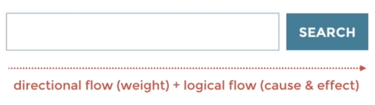

Jump to a section
13 · Using Harmony to Create Directional Flow
Refined 15 October 2026 from the supplied Joe Natoli course notes. Original wording and captures remain preserved.
Core principle
Alignment, spacing and emphasis can suggest a reading and action sequence.
Application to game tools
Arrange source, destination, preview and commit in a route that matches the workflow.
Assessment and qualification
Left-to-right examples reflect a reading context; localization and task structure can require a different route.
Try it
Where does the eye go after the most prominent element?
Source: 13 Using Harmony to Create Directional Flow.md
Study detail and teaching translation
Directional flow emerges from alignment, grouping, repetition and changes in emphasis; it is not limited to adding arrows.
A strong starting point should lead toward the next relevant information. Multiple unrelated focal points can interrupt the intended sequence.
Teaching adaptation: organize source inputs, scope, reviewed consequence and Apply in the order the artist needs them. Test the reading route rather than assuming a universal scanning pattern.
Original captures
